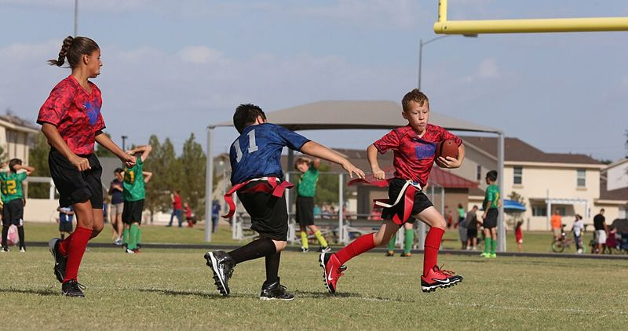
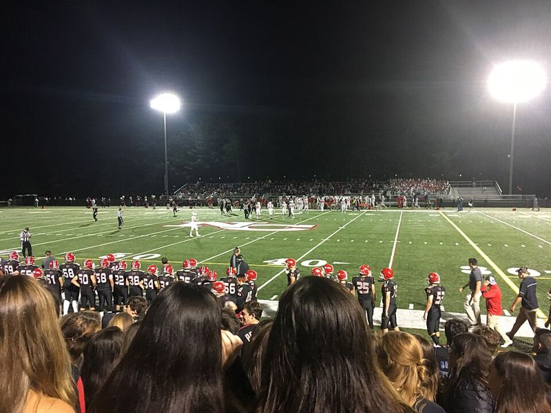
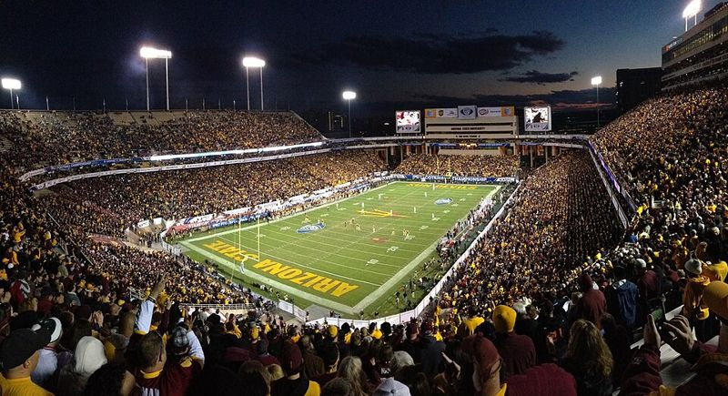
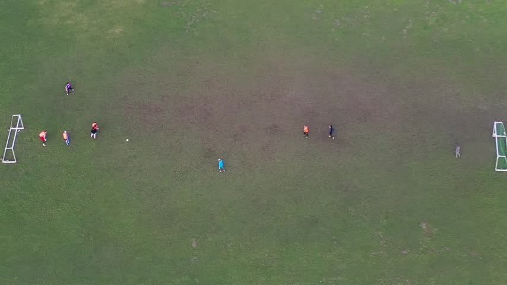

The Pipeline
Every level of sports is basically a filter. A ton of kids start, and every time you move up a level most of them do not make it through. Nobody really shows you that part when you are young, so when your turn comes it feels like you did something wrong. You did not, it is just how the whole thing is built. This page walks through each step in order so you can see it.
Youth


This is where pretty much everybody starts. Flag football, rec soccer, little league, whatever your parents signed you up for. At this level almost nobody gets cut, everyone plays, and the whole point is just having fun. Looking back it is the only level where nobody is getting filtered out yet.
High School


High school is the first real cut. You have tryouts, varsity and JV, and some people stop here just because they want to do something else. It is still huge though. The NCAA counts more than eight million high school athletes in the U.S., and for most of them this is the last time they ever play on a real team with a coach and a schedule.
College


This is where the filter gets brutal. Out of those eight million plus, only about 550,000 end up playing at an NCAA school. For the two sports I played it looks like this.
- High school football has 1,029,588 players and the NCAA has 83,794, so about 8.1 percent make it.
- High school boys tennis has 158,667 players and the NCAA has 7,473, so about 4.7 percent make it.
So even being really good in high school means you are probably done at graduation, and most people do not figure that out until senior year.
Pro, For Almost Nobody
I did not put a picture here on purpose, because it is basically empty. The NCAA says about 1.4 percent of college football players get drafted into the NFL. That is 1.4 percent of the 8.1 percent who already made it out of high school. Pretty much everyone who plays any sport gets filtered out somewhere before this.
Adult Rec, Where Everyone Ends Up

And this is the funny part. No matter where you got cut, high school, college, or even pro, everyone ends up right here eventually. Rec leagues and pickup are the one level that takes everybody back. That is why the rest of this site is about what you do once you land here. Start with Keep Playing if you still want to play, or Stay In The Game if you want to be around the sport some other way.
All the numbers on this page come from the NCAA's Probability of Competing Beyond High School page, which uses 2024-25 high school and college participation data. The NCAA says they are estimates and not exact counts.